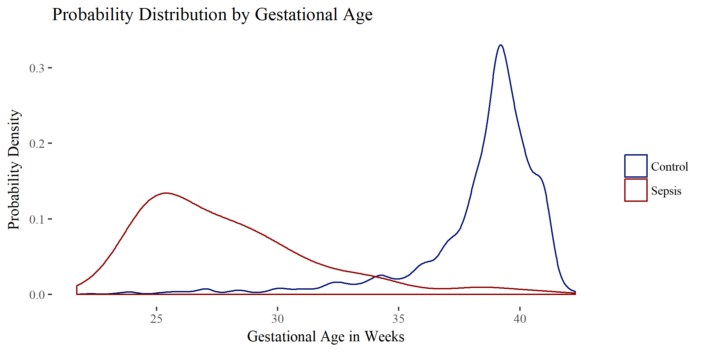

Late onset sepsis (LOS) is a problem encountered in neonatal intensive care units around the world. LOS in this case is defined as sepsis beginning within 3 to 28 days of life. Elena Enioutina, MD, PhD has proposed that the number of myeloid derived suppressor cells found in cord blood may correlate with late onset sepsis. To confirm this correlation, she plans on collecting cord blood from neonates at The University of Utah Hospital. To better understand the occurrences of LOS at the hospital, retrospective data was collected from a 9 year period at the university hospital for all neonates with ICD9 code 771.81 and presence at the university between 3 and 28 days of life. A subset of normal birth data were also collected as a control set. Specifically, she was interested in determining a cutoff age for gestational age that will increase the statistical power of the study and keep the number of patients included in the study to a minimum.
Elena asked me to help analyze this data to help her determine a cutoff gestational age for her prospective grant proposal. I worked with her to identify and remove outliers based on impossible values or exclusions based on previous literature, as well as justify those decisions. I used natural language processing techniques to determine which doctors notes were mentioning sepsis and in what context. We looked through and interpreted the blood culture results to make the best decisions when confirming LOS and distinguishing LOS from early onset sepsis (sepsis within 3 days of life).
After cleaning the data, I used the information to test gestational age as a predictor of LOS. Based on a logistic regression model, gestational age is a good predictor of late onset sepsis in terms of recall and precision (the density plot above confirms this point). The issue with gestational age is that since the outcome is so skewed(about 5:1000 sepsis:normal) the precision of the predictor is low. I then created a table showing the sensitivity, precision, and false positive rate of sepsis/no sepsis at different gestational ages. This table will inform the ideal gestational age cutoff for the study once a power calculation has been completed.
This project is ongoing and the next step will be to find other factors that may help predict late onset sepsis. The data we have is rich and there are many avenues to explore. The results of this analysis may eventually be submitted as a journal article describing the state of sepsis at the university hospital. Other options are to gain access to more data from the surrounding region to come to stronger conclusions.